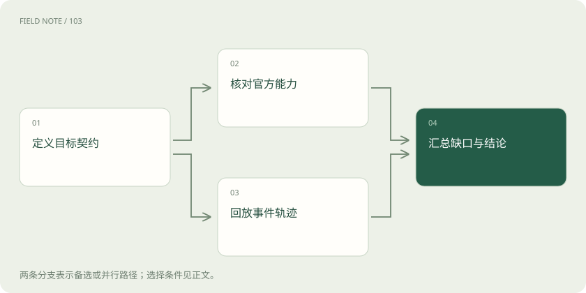
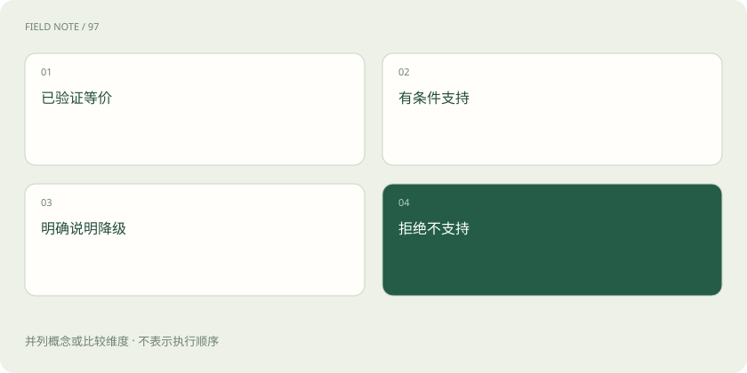

先读哪些知识
先用一个类比理解
类比只帮助建立直觉，不等同于技术的完整机制。
一图看懂
先定义兼容对象与方向
兼容必须有方向：应用按哪套接口发请求，网关接收什么，后端实际调用哪套接口。甲接口转乙接口成功，并不代表乙转甲也能保留同样信息；两者表达能力与状态机制可能不同。验收记录至少包含客户端契约、提供商契约、模型、端点、版本和核验日期。
教学场景是报销系统沿用 Chat Completions 客户端，却把请求路由到多家模型。系统真正需要的是收据图片、报销查询工具和格式化结论。若只测问候文本，无法说明关键业务链兼容。应先把必须保留的行为列清楚，再决定哪些模型路径具备上线资格，而不是从一个成功状态码推导全部功能可用。
把支持拆成可解释等级
可以把能力分成已验证等价、条件支持、明确降级和不支持。等价也应限定在所测契约范围内，不代表模型生成文字必须相同。条件支持要写明模型、格式或模式约束；降级要说明丢失了什么，以及应用是否接受；不支持则应在执行前清楚拒绝。
例如两边都能返回文本，不说明两边都支持同样的严格结构约束。若后端不能履行必要Schema，静默移除限制并生成自由文字不是等价。可以选择另一条支持路径，或在应用理解后采用独立解析验证，但后者增加失败与重试成本，应被记为新的方案而不是原能力自动存在。
请求接受不代表参数生效
某些兼容层会忽略参数，另一些会拒绝或裁剪值。Anthropic 官方兼容说明提供了具体支持表，Gemini 兼容文档也列出扩展与限制。因此验收既要看是否返回错误，也要观察关键选项是否真正改变契约行为，不能把HTTP成功当作全部参数被执行的证明。
对不易从一次输出判断的设置，应结合官方能力说明和多样本测试，避免凭一次随机回答推断生效。对于权限、数据用途或输出结构这类硬要求，应优先要求明确支持与独立校验，不能依靠观察语气猜测。客户端未发送字段、网关删除字段和后端忽略字段，要能在诊断记录中区分。
图解：兼容证据两条线

测试消息与内容的结构组合
样本要覆盖多轮用户修改、系统要求、多个内容块、图片与文字混合，以及空内容和拒绝输出。角色映射也需要检查：把后续限制挪到开头、把工具结果包装成用户指令，都可能改变语义。相同字段名称不保证作用相同，缺省值也不应被当作跨服务统一标准。
报销助手先收到“只查询，不提交”，后面收据附注写着“立即报销”。转换后应保持后者是资料内容，不能升级为新的授权。图片无法被后端接收时，也不能只留下文件名再假装完成了图像理解。测试报告应说明哪些模态组合真正经过检查，哪些只是文档声明。
工具闭环是独立的验收单元
工具样本应覆盖零次、一次、多次并行、参数错误、执行失败和结果未知。每个请求与回传必须保持正确关联，工具结果不应因包装变化而被当作普通闲聊。还要核对工具选择、参数Schema和输出约束的实际支持范围，不能因为都有一个tools字段就宣布等价。
对于客户端工具，模型提出调用后仍需宿主检查和执行；对于托管工具，接入方需要理解其执行边界和回执。测试可以用离线模拟工具返回，检验网关是否错配订单或重复派发，不需要执行真实报销。本教程的样本设计属于工程建议，没有宣称所有接口都自带这些治理能力。
状态资源不能只改一个ID
Responses 的响应链、Gemini Interactions 的交互链和应用自己的聊天历史属于不同状态机制。原提供商的资源ID通常不能交给另一提供商继续使用。若路由切换要求重新提交上下文，应检查是否保留必要消息、工具回执与合法状态，不能仅把字段名换掉就当作迁移。
服务端是否保存请求、保留多久、允许怎样删除以及续接时如何计费，都应按实际接口核对。断线后如果既不知道生成是否结束，也不知道工具是否执行，网关应表达未知并查询已有状态，而不是自动建立第二条业务轨迹。跨用户共享状态尤其需要独立隔离，API兼容不会自动提供用户授权。
用离线回放与受控探针分开验证
离线回放可以保存脱敏事件轨迹，测试分片、顺序、错误、终态和用量聚合，不必每次调用真实模型。它能证明解析器对既定轨迹的行为，却不能证明线上模型当前一定产生相同事件或支持相同参数。线上探针可补充验证，但需明确账号、成本、样本和授权范围。
本站此次只依据官方文档整理并设计概念样例，没有执行付费调用或私有流量采集。读者审查报告时应区分“文档声明”“离线测试通过”“线上实测通过”三种证据。已有轨迹也会随接口演进失效，因此每次调整适配规则或SDK，应重跑相关回归并核对当前官方变更。
图解：发布能力的四种状态

发布矩阵应展示缺口与回退
最终兼容矩阵不只是勾选功能，还应链接证据、说明限制、记录失败和指定回退方式。例如纯文本可路由到多条路径，图片工具组合只有部分路径通过，遇到签名或不可迁移状态时保持原提供商或拒绝切换。这样路由决策才与真实能力绑定，而不是按低价或低延迟盲目尝试。
Kiro 等产品接入需要写明使用官方 ACP、产品内的模型选择能力，还是某个社区适配项目的特定实现；若声称支持自定义模型提供商，应另附对应版本的正式配置文档。后者不能继承官方支持承诺。建立清晰边界不是为了堆更多配置，而是让使用者知道本次请求能保持哪些要求、出了问题该查哪一层，以及下一次升级需要重新证明什么。
放在一起对比
| 证据等级 | 能够支持的结论 | 仍不能保证 |
|---|---|---|
| 官方文档 | 提供商声明的接口与限制 | 当前部署已正确配置 |
| 离线回放 | 适配逻辑处理已知轨迹 | 线上所有事件与参数行为 |
| 受控线上实测 | 特定模型端点和样本表现 | 所有区域版本与未来行为 |
| 业务验收 | 目标场景端到端满足条件 | 未覆盖场景同样可靠 |
放进真实场景
教学验收：纯文本路径通过，不给图片路径打勾；工具参数校验通过后，再测试并行结果关联与断线未知状态。每项结论都有自己的证据范围。
别踩这个误区
想一想
离线回放通过，能否宣称当前线上模型已完整支持该接口？
不能。回放证明的是本地适配逻辑对既定轨迹的处理；线上支持还需官方能力核验或经授权的实际测试，并注明范围。
关联阅读
资料与边界
本文为原创知识讲解。类比和图示经过简化；示例数字不代表实测或报价。整理日期：2026-11-05。文末列出对应技术的原始资料，具体功能与版本支持请以原文为准。